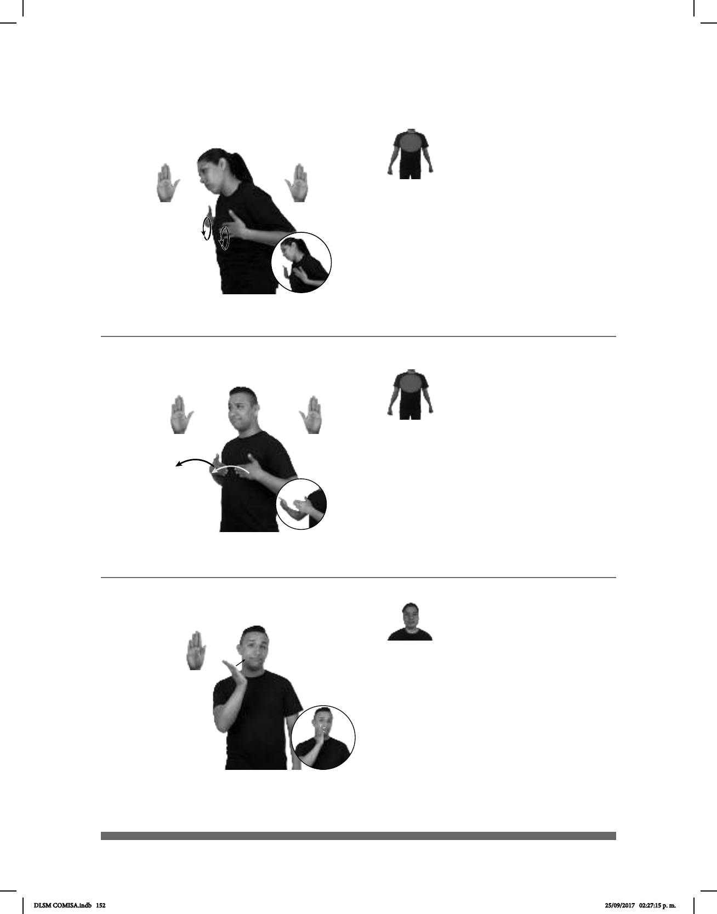

152
Seña: SM
B-P.6
La palma inicia
oblicua hacia arriba y hacia la izquierda
y
termina hacia la izquierda.
A la altura de la mejilla.
La MD golpea la mejilla.
Cejas hacia
arriba, se esboza una sonrisa.
sust. f. Sacramento que
administra la Iglesia Católica.
La seña se usa en la
comunidad sorda católica.
(B-P 126)
DOMINGO pro-YO CONFIRMACIÓN pro-YO IR
(B-P 124) Confesar
1
2
DOMINGO IGLESIA pro-YO IR CONFESAR pro-YO
El domingo me iré a confesar a la iglesia.
Seña: SS
B-P.2
Palmas hacia adentro.
Sobre el pecho.
Las manos se
mueven formando círculos hacia
enfrente
repetidamente.
Cabeza ladeada
hacia la derecha, boca entreabierta.
1. v. tr. Decir una persona
sus pecados a un sacerdote católico. 2.
sust. f. Declaración que hace una
persona acerca de algo que sabe o
siente y que antes no había hecho
explícita.
Seña: SS
B-P.2
Palmas hacia adentro.
Sobre el pecho.
Las manos se mueven
formando un arco hacia el frente.
Rotación de cabeza
hacia la izquierda, se esboza una sonrisa.
1. v. intr. Esperar con
seguridad que alguien actúe de una
forma determinada, que algo suceda o que
algo funcione como se espera. 2. sust. f.
Esperanza de que una persona o cosa se
comporte o funcione, según está previsto.
(B-P 125)
1
2
pro-YO TODO BIEN CONFIAR pro-YO
Confío en que todo estará bien.
DLSM COMISA.indb 152 25/09/2017 02:27:15 p. m.